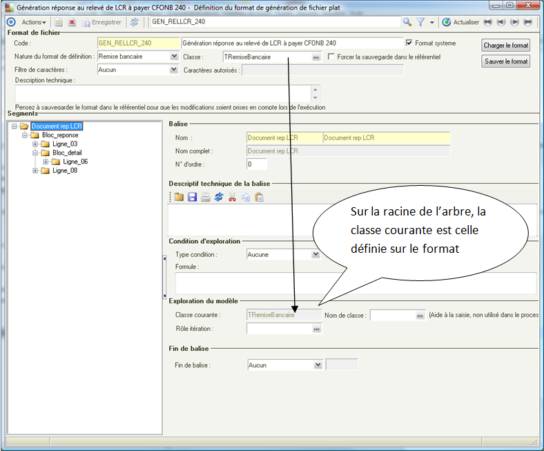
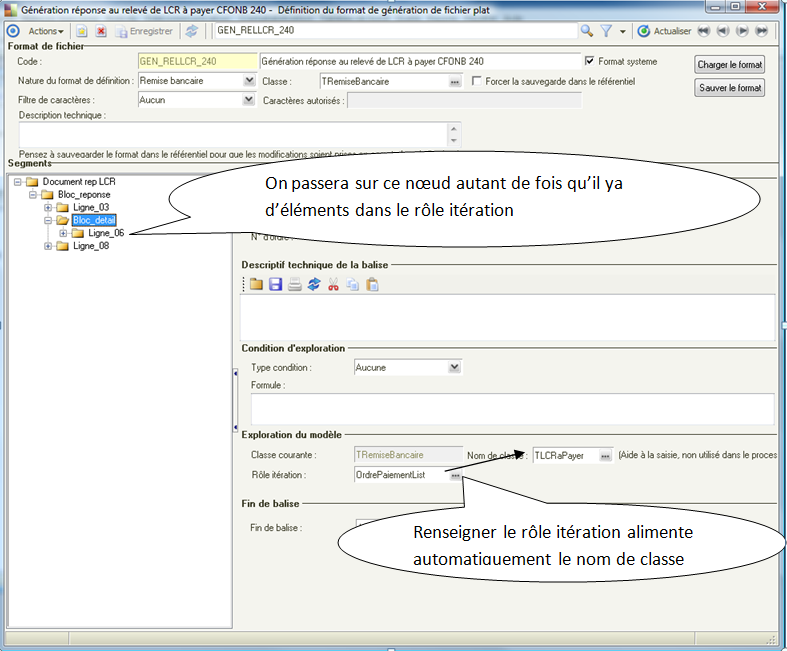
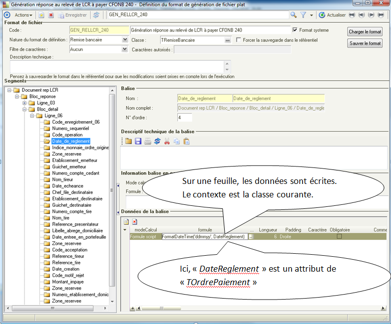
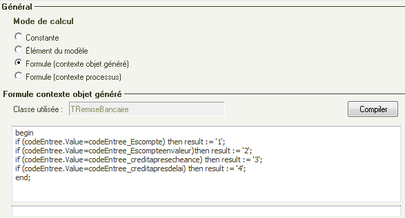
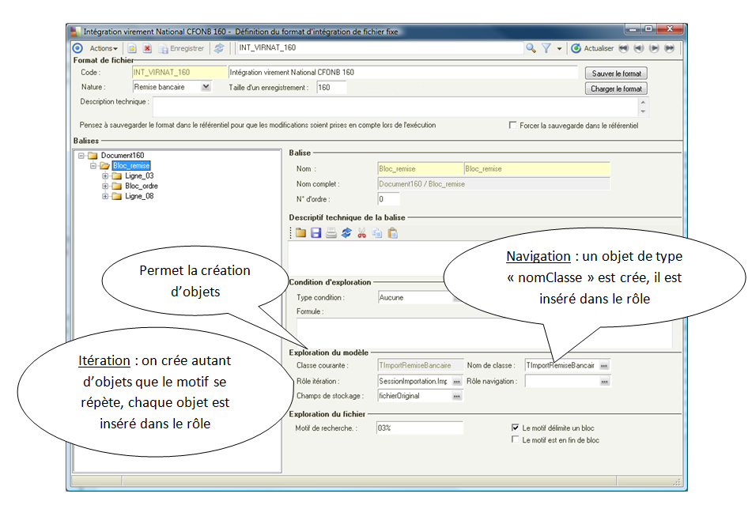
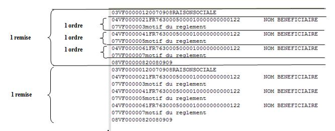
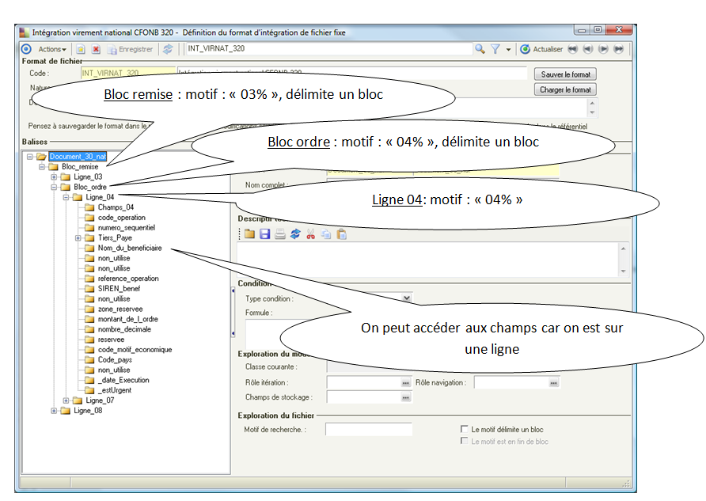
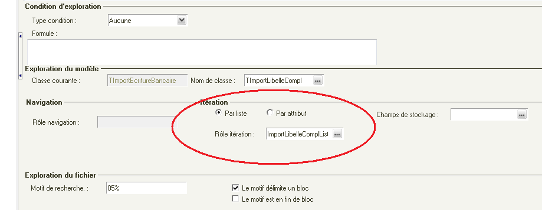
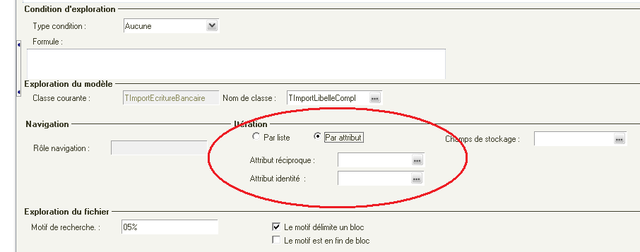

Référence pour les formats de fichier
Sommaire |
Formats de génération
Principe général de la génération
Le format est une représentation sous forme arborescente du fichier que l'on souhaite générer.
Un format est composé d'un ensemble de balises.
On distingue deux sortes de balises:
- les balises noeuds de l'arbre : Les noeuds permettent d'explorer le modèle.
- les balises feuilles de l'arbre : Les feuilles portent les données à écrire.
La génération va explorer le modèle métier en partant de l'objet à générer (une remise bancaire par exemple).
Pour cela, on explore le format récursivement, la classe courante nous indique notre position dans le modèle.
Les noeuds permettent de changer de classe courante et ainsi d'accéder aux données que l'on souhaite écrire dans le fichier généré.
Exploration du modèle



Attributs de la balise
N° d'ordre : permet de trier les balises
Condition d'exploration
- type condition aucune : exploration des balises enfants
- type condition formule : exploration des balises enfants seulement si la formule retourne vrai (l'objet qui exécute la formule est du type de la classe courante)
- type condition formule processus : exploration des balises enfants seulement si la formule retourne vrai (c'est le processus de génération qui exécute la formule)
Attributs de la donnée

Longueur : longueur de la donnée écrite dans le fichier. si la donnée retournée est plus longue, elle est tronquée
Mode de calcul
- Mode de calcul constante : la donnée ne varie pas
- Mode de calcul élément du modèle : un attribut de la classe courante
- Mode de calcul formule : permet d'exécuter une formule, l'objet qui exécute est du type de la classe courante
- Mode de calcul formule (contexte processus) : permet d'exécuter une formule, l'objet qui exécute est le processus. Cela permet d'accéder à des attributs portés par le processus qui exécute la génération (compteur de ligne par exemple)
Méthodes disponibles sur le processus de génération
La méthode GetCompteur est disponible sur le processus de génération.
function GetCompteur(aIdCompteur : integer; aInit, aIncrement: boolean): integer;
| Resultat | La valeur du compteur |
| aIdCompteur | Identifiant du compteur |
| aInit | Initialiser le compteur (oui/non) |
| aIncrement | Incrémenter le compteur (oui/non) |
Formats d'intégration
Principe général
Le paramétrage de l'exploration du modèle permet d'affecter les données lues à l'objet qui convient.

Pour les formats Xml : le format représente le message xml reçu.
Pour les formats non Xml : Le format est parcouru récursivement, l'exploration du fichier permet de se positionner sur les données du fichier.
Attributs de la balise
Motif de recherche : Permet de sélectionner une partie du fichier lu : ligne ou bloc(un bloc est un ensemble de lignes)
La partie sélectionnée devient la partie courante du fichier pour les balises enfants.
Syntaxe :
- "%" représente n'importe quelle chaîne
- "[nb]" représente n'importe quelle chaîne de longueur nb
Exemples :
"03%" : une ligne qui commence par "03"
"E2IDKU1[48]PEX%" : une ligne qui commence par "E2IDKU1" suivi de 48 caractères quelconques puis de "PEX" et terminée par une chaîne quelconque.
Le motif délimite un bloc : la partie sélectionnée est l'ensemble de lignes commençant par le motif de recherche (jusqu'au prochain motif)
Le motif est en fin de bloc :la partie sélectionnée est l'ensemble de lignes se terminant par le motif de recherche (jusqu'au prochain motif),
Exemple :


L'amorce du traitement
Le processus appelant est passé en paramètre, c'est l'objet maître qui tiendra les objets créés.
Pour cela, il est possible que le processus appelant ait un attribut de type liste d'objet, le nom de cet attribut devra apparaître en premier comme rôle itération dans le format.
Pour des raisons d'empreinte mémoire, il est cependant préférable que les objets soient attachés à un rôle liste. Le processus (non persistant) appelant pourra alors avoir un rôle vers un objet persistant (par exemple un objet de session) qui lui aura un liste des objets importés.
Itération
Itération par liste
Si les objets intégrés sont liés par un rôle liste, on le renseigne.

Itération par attribut
Les objets intégrés peuvent ne pas être liés par un rôle liste.(classe de type SQL par exemple). La liaison peut alors s'exprimer grâce à des attributs.

Par exemple la classe TSQLRemise a pour attribut identité "id" et elle est référencée par la classe TSQLOrdre grâce à l'attribut "idRemise".(Une Remise est liée à plusieurs ordres)
Spécificité fichiers variables
| Whos here now: Members 0 Guests 1 Bots & Crawlers 0 |